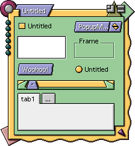

News
| REALBasic versions |
| Future versions? |
| DR1r35a | CR1 | 1.0.0 |
| Limited Java Compiling | No Java | Full Java Support |
| Drag FRM files into project | First VB Importer | Complete VB importing |
He mentioned that CR1 and 1.0.0 will both have a price, with $99 being the price for the first official release (1.0.0). These are all subject to change of course, so the figures you see here might not turn out to be true.
| Finally Savvy? Sort of... |
|  | Up until DR1r35a, most controls weren't appearance manager savvy for system 7 users (I'm not sure about OS 8--I don't use it). Howerver, I was delighted to find that this was changed in r35a. To the left is a screenshot of the controls in r35a. As you can see, they match the kaleidoscope color scheme that is running (it's Scherzo). It didn't do this before, and it makes me quite happy that this has changed. However, not everything is savvy, as you can see from the screenshot. Tab panels are the biggest problem, but the borders of text and listboxes are also bad. The problem for the editfield (if you haven't noticed), is that the highlight and shadow colors don't match the background. This is a problem for the frame too, though that one is less obvious. These fixes would be incredibly easy to make, and I hope that they are made in an upcoming release. |
| An extrememly buggy "feature" |
| In the release notes for DR1r35a, it said that RB now had the first
part of a VB importer. This allowed you to drag Visual Basic's .frm files into a
project (.frm files are the equivalent of what RB makes when you drag a window out
of the project window and it becomes a file). Since I had a copy of Visual Basic 3 on my DOS card, I decided to test this. First, I made a simple form with a label, a check box, an option button, and two push buttons. Then, I exported it in the two formats that VB3 can handle-text and binary. I then copied the files to a floppy disk, and brought them to the Mac that I use RB on. To test this, I made a new project, and dragged the binary form into it. The computer immediately crashed. Then, I tried the text form . Again, it crashed. Then I opened the text form in Simple Text, and removed the box characters (these are at the start of every line of a windows text file when viewed on another computer. This is because PCs and Macs record return characters differently). I saved, and dragged it on. Again, it crashed. This was starting to get annoying, so I tried some other stuff. I figured that RB was |
probably geared towards Visual Basic 5, so I changed the line at the top from VERSION=2.00 to VERSION=5.00. Same result. This also happened when I tried VERSION=4.00 The word on this new ability? As the far to easy to memorize table shows, avoid at all costs! |
||||||||||